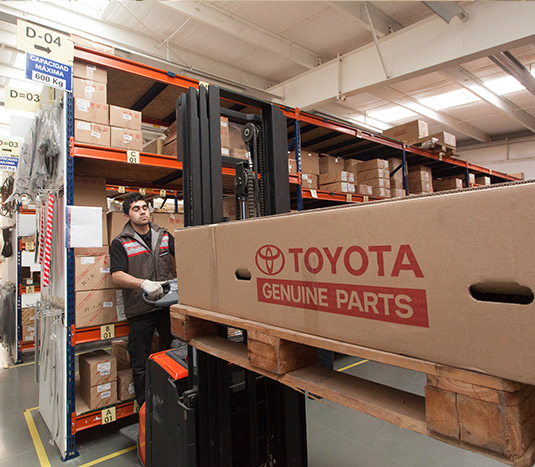

Servicios Posventa
Al adquirir un vehículo TOYOTA usted eligió una filosofía de trabajo que respeta principios y valores, una relación que empieza en nuestros Concesionarios.
Cuando una persona compra un vehículo Toyota, entiende que eligió mucho más que un vehículo.
Hablamos de una manera de pensar y hacer las cosas que nos lleva a estar presentes junto a nuestros clientes, cada vez que nos necesitan.
Este es el Servicio Posventa Toyota
Personal técnico altamente calificado
Los vehículos Toyota están en buenas manos. En todo el país, contamos con profesionales capacitados en nuestro Centro de Entrenamiento Toyota. Asesores de Servicio (Programa TSA) que se encargarán de atenderlo en todo el proceso del servicio, cuando visita el taller. El asesor se encargará de asegurar la hora prometida de entrega y el cumplimiento de la totalidad de los puntos anotados en la orden de reparación. Técnicos (Programa TEAM 21) altamente capacitados para realizar los mantenimientos y reparaciones necesarias en los vehículos. Asesores de Repuestos (Programa TARP) atendiendo en su mostrador, brindando toda la información necesaria acerca de disponibilidad y costos de repuestos y accesorios.

Inspección pre-entrega de vehículos
A través de rigurosos sistemas de control, aseguramos que el 100% de la calidad de fabricación Toyota llegue al Cliente.
La mejor garantía para todos los vehículos
Como los primeros en confiar en nuestros productos somos nosotros mismos, le ofrecemos la mejor garantía posible. Nuestra Garantía comienza con la entrega de su vehículo, y lo ampara por 5 años o 150.000km transferibles, lo que ocurra primero. Esto significa un mayor valor para su Toyota y una mayor tranquilidad para usted, siempre.
Repuestos genuinos
Brindamos a nuestros clientes la tranquilidad de contar con un stock permanente de repuestos genuinos para sus vehículos con entrega diaria a todo el país
Accesorios genuinos
Toyota dispone de una amplia gama de accesorios genuinos para todos sus vehículos. Diseños exclusivos, alta resistencia y durabilidad garantizan la calidad de los mismos.